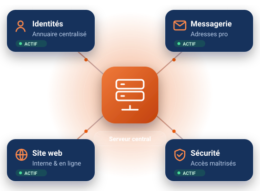
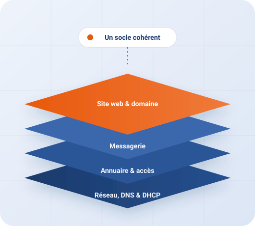

Services informatiques & intégration réseau · Lomé
Une informatique fiable et maîtrisée, au service de votre activité.
NovaLink Togo conçoit, déploie et maintient le système d'information des entreprises et organisations : réseau, comptes utilisateurs, messagerie professionnelle, site web et sécurité des accès, avec un interlocuteur unique.
- Interlocuteur unique
- Solutions documentées
- Validation avant mise en service

Technologies que nous mettons en œuvre
- Windows Server
- Active Directory
- DNS & DHCP
- Stratégies de groupe
- IIS
- SMTP · IMAP · POP3
- RADIUS (NPS)
- Hébergement cloud
Nos services
Toutes les briques de votre système d'information
Du câble réseau jusqu'à votre site en ligne, nous prenons en charge chaque service et veillons à ce qu'ils fonctionnent ensemble.
-
Réseau & connectivité
Plan d'adressage, serveurs DNS et DHCP, routage et partage de l'accès Internet : un réseau stable et documenté.
- Adressage et nommage des postes
- Attribution automatique des adresses
- Accès Internet partagé (NAT)
-
Annuaire & postes de travail
Un domaine Active Directory pour centraliser les comptes, organiser les services et appliquer vos règles sur chaque poste.
- Unités d'organisation par service
- Groupes et dossiers partagés
- Stratégies de groupe (GPO)
-
Messagerie professionnelle
Des adresses e-mail à votre nom de domaine, un serveur de messagerie maîtrisé et des clients configurés sur les postes.
- Une boîte par collaborateur
- Envoi et réception SMTP / IMAP
- Configuration des clients mail
-
Site web & nom de domaine
Conception de votre site vitrine, hébergement sur votre réseau interne puis en ligne, et gestion des enregistrements DNS.
- Site responsive et accessible
- Hébergement IIS ou cloud
- Sous-domaines et HTTPS
-
Sécurité des accès
Droits par groupe, authentification centralisée et règles de pare-feu : vos données restent accessibles aux bonnes personnes.
- Droits d'accès par service
- Authentification RADIUS
- Restrictions sur les postes
-
Support & maintenance
Assistance aux utilisateurs, mises à jour et interventions planifiées pour que votre informatique reste disponible.
- Assistance à distance et sur site
- Maintenance préventive
- Évolutions de votre installation

À propos
Un partenaire technique de proximité, à Lomé
NovaLink Togo accompagne les organisations qui veulent un système d'information solide sans avoir à monter leur propre service informatique.
Notre approche : un socle cohérent où chaque service s'appuie sur le précédent. Le réseau et le DNS rendent chaque ressource joignable par un nom clair ; l'annuaire donne à chaque collaborateur un compte unique ; la messagerie et le site web s'appuient sur votre nom de domaine.
- Des solutions éprouvées plutôt que des effets de mode
- Des configurations documentées et transmises
- Un discours clair, sans jargon inutile
Pourquoi nous
Ce qui fait la différence au quotidien
Nos engagements sont simples : vous savez ce qui est installé, pourquoi, et comment le faire évoluer.
-
Une solution intégrée
Réseau, annuaire, messagerie et web conçus ensemble, plutôt que des outils posés côte à côte.
-
Testé avant d'être ouvert
Chaque service est validé sur votre réseau interne avant d'être publié sur Internet.
-
Documentation remise
Chaque installation est livrée avec son manuel et ses procédures, pour que vous restiez autonome.
-
Transparence
Des propositions détaillées et des choix techniques expliqués, sans coût caché.
-
Sécurité dès la conception
Droits minimaux, serveurs internes non exposés et accès en ligne chiffré (HTTPS).
-
Proximité
Une équipe basée à Lomé, qui échange avec vous en français et intervient sur site.
Notre méthode
Une démarche claire, du diagnostic au suivi
Chaque projet suit les mêmes étapes, avec des livrables concrets et des points de validation avec vous.
-
Écoute & diagnostic
Échange sur vos besoins, état des lieux de votre parc et de vos usages, priorités.
-
Conception & proposition
Architecture cible, choix des technologies et offre technique et financière détaillée.
-
Déploiement & tests
Installation et configuration des services sur votre réseau interne, puis vérifications complètes.
-
Mise en ligne
Publication du site et rattachement à votre nom de domaine, avec accès sécurisé en HTTPS.
-
Formation & suivi
Remise de la documentation, prise en main par vos équipes, puis support dans la durée.
Un projet, une question, un besoin d'assistance ?
Décrivez-nous votre organisation et vos besoins : nous revenons vers vous avec une première analyse.
Contact
Parlons de votre projet
Écrivez-nous en précisant votre organisation et votre besoin. Le bouton ci-dessous ouvre votre logiciel de messagerie ; aucune donnée n'est collectée par ce site.
Écrire à NovaLink TogoPour une réponse rapide, indiquez :
- le nom de votre organisation et votre secteur ;
- le nombre approximatif de postes et d'utilisateurs ;
- les services concernés (réseau, messagerie, site web…) ;
- vos disponibilités pour un premier échange.
Coordonnées
- E-mailcontact@ipnet.local
- Téléphone+228 22 00 00 00
- AdresseBoulevard du 13 Janvier, Lomé, Togo
- HorairesLundi – Vendredi, 8h00 – 17h00